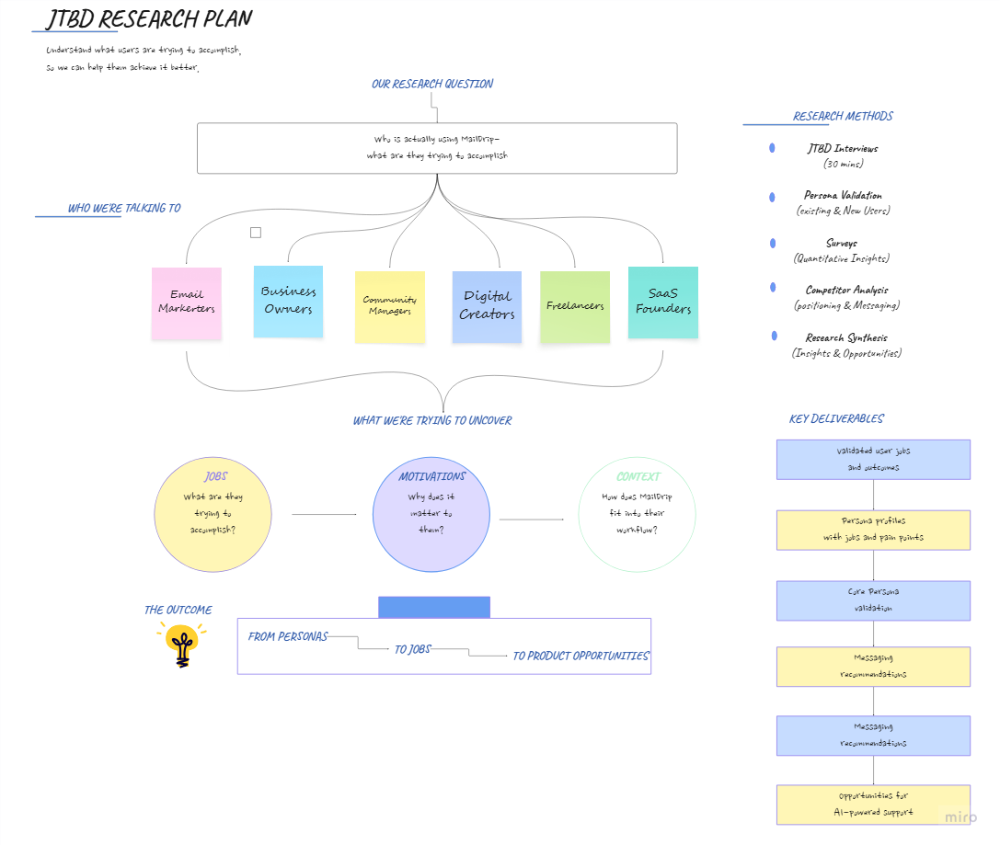
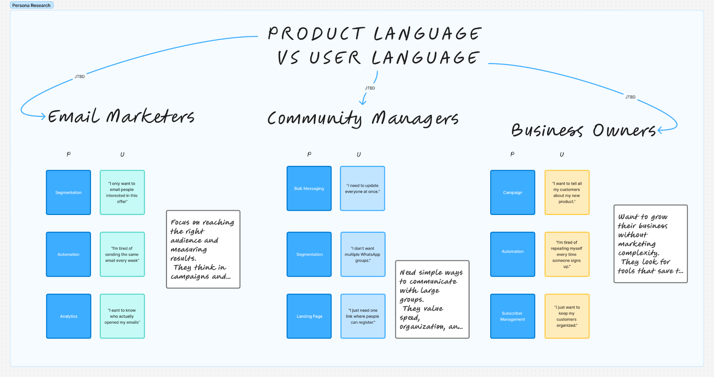

Understanding Who MailDrip Really Serves
Using Jobs-to-be-Done research to uncover new user personas and shape a more personalized product experience.
Role
Lead UX Researcher
Methods
JTBD Interviews • Persona Validation • User Interviews • Surveys • Competitor Analysis • Research Synthesis • Validation Testing

Methods Used
7
Core Personas Identified
3
Teams Informed
4
Research Type
JTBD
Overview
MailDrip was originally built around the needs of email marketers. But as the product grew, we began seeing users from different backgrounds — including business owners, community managers, e-commerce founders, and content creators — signing up and using the platform in different ways.
Through Jobs-to-be-Done interviews and persona research, I found that many of these users were trying to achieve similar underlying goals, but they described those goals in very different language.
That became an important product insight.
If we wanted to onboard different personas effectively, users needed to recognise their goals, their language, and their use case in the product.
The research helped the team move beyond a one-size-fits-all product narrative and begin incorporating language and messaging that reflected different personas and what they were actually trying to accomplish.
This influenced how we thought about onboarding, product messaging, feature positioning, and how MailDrip communicated its value to different users.
The Challenge
MailDrip was primarily designed and marketed for email marketers.
As the product evolved, we noticed that other types of users were increasingly signing up, including:
- Business owners
- E-commerce founders
- Community managers
- Digital creators
The challenge wasn't simply identifying these users.
We needed to understand:
- What they were trying to achieve.
- Whether MailDrip could genuinely support those goals
- What they expected when they first entered the product
- Where the existing experience matched or missed those expectations
- How we could communicate the product's value in language that felt relevant to each audience

Why This Research Mattered
As MailDrip shifted its focus toward growth and monetisation, the team needed evidence to answer four important questions:
- Which user groups represented meaningful opportunities?
- What outcomes were these users actually trying to achieve?
- Could MailDrip support those outcomes?
- How should the product communicate its value to different audiences?
Rather than deciding based on assumptions, we wanted to understand what users were actually trying to get done.
Why Jobs-to-be-Done
Instead of grouping users only by demographics or job titles, I used a Jobs-to-be-Done approach to understand the outcomes people were trying to achieve.
For example:
- An email marketer might want to nurture leads.
- A business owner might want to promote a new product.
- A community manager might want to keep their community informed and engaged.
Different people.
Different language.
Different contexts.
But sometimes, similar underlying goals.
The research was about understanding those goals and where MailDrip could naturally fit into each user's workflow.
My Role
Lead UX Researcher
I:
- Defined research objectives
- Developed the JTBD research framework
- Planned the study
- Conducted persona validation
- Recruited participants
- Moderated and supported interviews
- Synthesised findings
- Presented recommendations to Product, Growth, Leadership and UX Writing teams
- Advocated for a broader persona strategy across the product experience
Research Approach
To understand whether MailDrip was serving multiple personas with different goals, I combined qualitative and exploratory research methods.
Methods
- Jobs-to-Be-Done Interviews
- Persona Validation
- User Interviews
- Surveys
- Competitor Analysis
- Research Synthesis
The goal wasn't simply to understand who users were.
It was to understand what they were trying to accomplish, what they expected from MailDrip, and where the product could better support those goals.

What We Learned
The research revealed several patterns that challenged our assumptions.
Users described similar goals using completely different language.
Business owners rarely identified themselves as email marketers, even when some of their needs overlapped with traditional email marketing use cases.
People were often thinking about the outcome they wanted rather than the feature they needed.
We also found that users needed help understanding how MailDrip fitted into their own workflow.
This made onboarding an important part of the opportunity.
The question became less about:
"Which features should we show this user?"
and more about:
"What is this user trying to achieve, and how can we help them see the value quickly?"

Key Insight
MailDrip wasn't only serving email marketers.
Different personas arrived with different goals, expectations and language.
The opportunity wasn't adding more features.
It was helping every user quickly answer one simple question:
"Can this product help me achieve what I'm trying to do?"
MailDrip was primarily designed and marketed for email marketers.
MailDrip wasn't only serving email marketers — different personas arrived with different goals, expectations and language.
Impact
This research shifted the conversation from "Who are our users?" to "What are they trying to accomplish?"
The findings directly influenced:
- Product messaging
- UX writing
- Persona-based onboarding
- Feature positioning
- Early AI onboarding concepts
Rather than presenting MailDrip through a single lens, the team began exploring a more goal-driven experience that helped different users understand how the product supported their individual goals.
Following implementation, I conducted validation testing with users from multiple personas to evaluate whether the updated onboarding experience, messaging, and feature positioning better reflected their expectations.
The validation uncovered additional opportunities to improve onboarding clarity, navigation, and goal-based guidance across the product experience, including onboarding flows and opt-in pages.
Future Opportunities
This research created a foundation for a more adaptive product experience.
Rather than treating every user the same, it highlighted opportunities to personalise the experience around the outcomes people were trying to achieve.
Potential next steps included:
- Personalised onboarding based on user goals
- Goal-driven AI guidance for first-time users
- Persona-specific messaging and feature recommendations
- Dynamic onboarding journeys tailored to different Jobs-to-be-Done
These opportunities could help users reach value faster, regardless of their role or background.
Project Reflection
One of my biggest takeaways from this project was that understanding users isn't just about identifying who they are.
It is about understanding what they are trying to accomplish.
Jobs-to-be-Done helped shift the conversation away from job titles and demographics and towards meaningful outcomes.
That gave the team a clearer way to think about personas, onboarding, messaging, and the role MailDrip could play in each user's workflow.
For me, the most valuable part of the research was seeing how those insights could move beyond a research report and influence the actual product experience.